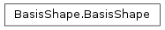
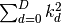
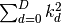
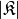
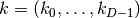
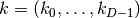
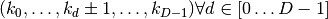
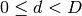
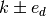
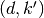

BasisShape¶
About the BasisShape class¶
The WaveBlocks Project
@author: R. Bourquin @copyright: Copyright (C) 2010, 2011, 2012, 2013, 2014 R. Bourquin @license: Modified BSD License
Inheritance diagram¶

Class documentation¶
- class WaveBlocksND.BasisShape¶
This class defines the abstract interface to basis shapes. A basis shape is essentially all information and operations related to the set
 of multi-indices
of multi-indices  .
.Basis shapes must be immutable objects.
- __init__()¶
Raise : NotImplementedError Abstract interface.
- __str__()¶
Returns: A string describing the basis shape .Raise : NotImplementedError Abstract interface.
- __hash__()¶
Implement a custom hash function for basis shapes. This is important for storing wavepackets.
Raise : NotImplementedError Abstract interface.
- __iter__()¶
Implements iteration over the multi-indices
of the non-extended
basis set .Raise : NotImplementedError Abstract interface.
- __contains__(k)¶
Checks if a given multi-index
is part of the basis set .Raise : NotImplementedError Abstract interface.
- contains(k)¶
Checks if a given multi-index
is part of the basis set .Parameters: k (tuple) – The multi-index we want to test. Raise : NotImplementedError Abstract interface.
- find_largest_index()¶
Find the index
 with maximal distance
 from the zero index. In case of
multiple maxima the method returns the first one found.
with maximal distance
 from the zero index. In case of
multiple maxima the method returns the first one found.
- get_basis_size(extended=False)¶
Returns the size  of the basis. The size is the number of distinct multi-indices
that belong to the basis
.Raise : NotImplementedError Abstract interface.
- get_description()¶
Return a description of this basis shape object. A description is a dict containing all key-value pairs necessary to reconstruct the current basis shape. A description never contains any data.
Raise : NotImplementedError Abstract interface.
- get_dimension()¶
Returns the dimension
 of the basis shape .
This is defined as the number of components each multi-index
 has.
of the basis shape .
This is defined as the number of components each multi-index
 has.Raise : NotImplementedError Abstract interface.
- get_neighbours(k, direction=None)¶
Returns a list of all multi-indices that are neighbours of a given multi-index
. A direct neighbours is defines as
.Parameters: - k (tuple) – The multi-index of which we want to get the neighbours.
- direction (int) – The direction  in which we want to find the neighbours .
Returns: A list containing the pairs .
Raise : NotImplementedError Abstract interface.
- get_node_iterator(mode='lex')¶
Returns an iterator to iterate over all basis elements
.Parameters: mode (string) – The mode by which we iterate over the indices. Default is ‘lex’ for lexicographical order. Supported is also ‘chain’, for the chain-like mode, details see the manual. Raise : NotImplementedError Abstract interface.